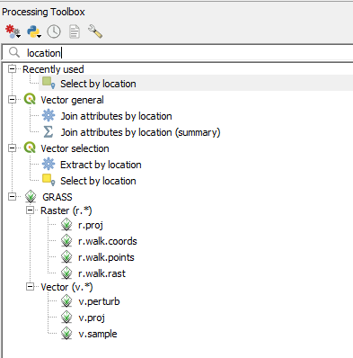
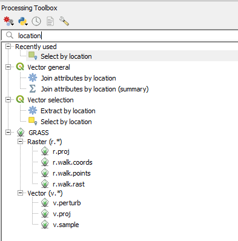
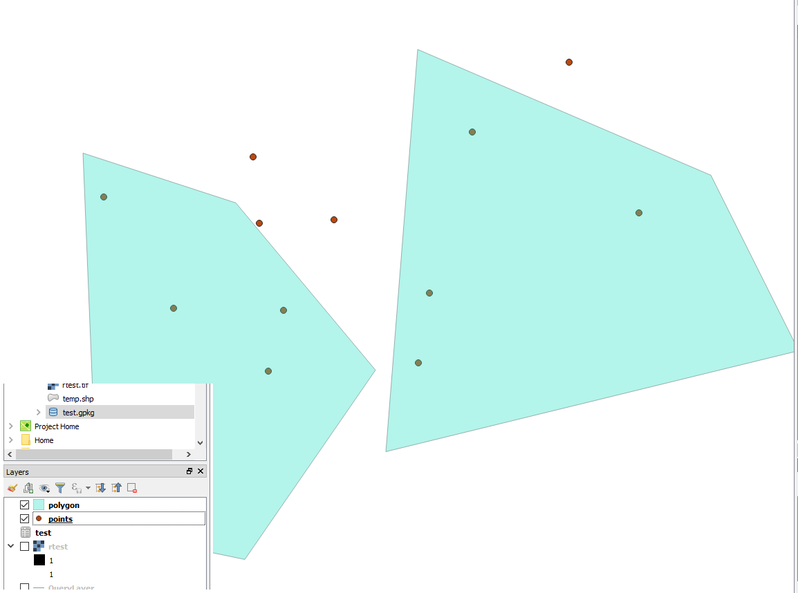

Select By Location
Back To Basic ConceptsBack To Homepage
QGIS does have a spatial selection tools, jsut like ArcGIS's Select By Location, it's also called Select By Location but has somewhat less options in the base tool.
The tools is accessed either via the top menu bar -> Vector -> Research Tools, or by Searching for it by name in the processing toolbar.
 

The tool is easy to use, lets take for our purpose a point layer and polygon layer, they look like this:

as you can see, some of the features in the point layer are within the polygon layer.
what we'll do is select those features using Select By Location, when clicked this is the window opened:
 we want to select features from the point layer, and compare them to all features from the polygon layer (since no features are selected within the polygon layer.
the relation we want to check is "which features from 'A' are within 'B'".
This is our result:
we want to select features from the point layer, and compare them to all features from the polygon layer (since no features are selected within the polygon layer.
the relation we want to check is "which features from 'A' are within 'B'".
This is our result:
 And thats it, Simple and easy to use, and now you know how to do that in Open Source.
And thats it, Simple and easy to use, and now you know how to do that in Open Source.